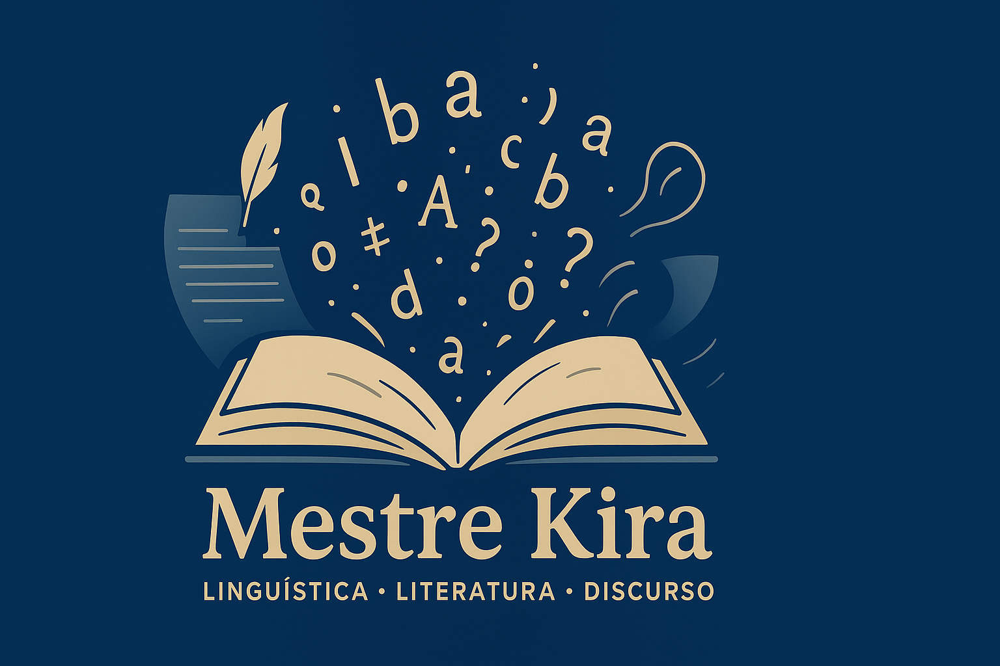

Possíveis temas para redação do PAES UEMA 2027
Neste guia completo, você encontrará uma análise das tendências da banca, além de temas prováveis com explicações detalhadas e estratégias para construir uma redação nota alta.
Mestre Kira — Português, Redação, Literatura e Gabarita Paes
O Mestre Kira é um portal educacional dedicado à produção e divulgação de conteúdos sobre Língua Portuguesa, Redação, Linguística, Literatura e Análise do Discurso.
O projeto foi desenvolvido com objetivo formativo e pedagógico, oferecendo conteúdos explicativos, materiais de apoio e reflexões voltadas para estudantes, professores, pesquisadores, vestibulandos, concursandos e leitores interessados em compreender de forma mais profunda o funcionamento da linguagem, dos textos e da produção de sentidos.
Conheça o Gabarita Paes
O Gabarita Paes é a plataforma do Mestre Kira para organizar sua preparação para o vestibular da UEMA. Reúne simulados PAES, treino com questões do ENEM por disciplina, redação com apoio de inteligência artificial e acompanhamento de desempenho.
Pratique, consulte as explicações dos erros e utilize o roteiro de revisão para escolher os conteúdos da próxima sessão de estudo.
Acesso gratuito por tempo limitado. Cadastro sem cobrança automática. As avaliações e o ranking são recursos de estudo e não representam resultados oficiais da UEMA.

O que significa o nome Mestre Kira?
- K — Kaizen: melhoria contínua por meio do estudo.
- I — Invictus: perseverança para superar desafios.
- R — Ratio: razão, lógica e pensamento crítico.
- A — Areté: busca pela excelência e pelo desenvolvimento intelectual e pessoal.
Esses princípios orientam a proposta educacional do projeto.
O que você encontrará no Mestre Kira
- Fonética e Fonologia
- Morfologia e Sintaxe
- Produção Textual e Redação
- Interpretação Textual
- Literatura Brasileira e Portuguesa
- Análise do Discurso
- Conteúdos para ENEM e Paes UEMA
- Materiais para concursos e formação acadêmica
Os conteúdos apresentados possuem fundamentação teórica e abordagem didática, buscando tornar os estudos linguísticos e literários mais acessíveis, claros e significativos.
Conteúdos de Redação para ENEM e Vestibulares
Além dos conteúdos de Linguística e Literatura, o Mestre Kira também disponibiliza materiais voltados à produção textual, interpretação de textos, argumentação, desenvolvimento de repertório sociocultural e preparação para redações do ENEM e Paes UEMA.
Os conteúdos são desenvolvidos com foco pedagógico e procuram auxiliar estudantes na construção de uma escrita crítica, organizada e adequada às exigências dos processos seletivos contemporâneos.
Plataforma de Redação Mestre Kira
O projeto também conta com a Plataforma de Redação Mestre Kira, ambiente digital desenvolvido para auxiliar escolas, professores e estudantes no processo de produção, correção, acompanhamento e gerenciamento de redações.
A plataforma oferece recursos para criação de propostas de redação, correção por competências, acompanhamento de desempenho e organização pedagógica voltada à preparação para ENEM e vestibulares.
Conheça a Plataforma de Redação Mestre Kira
A quem se destina o Mestre Kira
- Estudantes da educação básica;
- Vestibulandos do Paes UEMA e candidatos ao ENEM;
- Concursandos;
- Graduandos em Letras;
- Professores de Língua Portuguesa e Literatura;
- Pesquisadores das áreas da linguagem;
- Leitores interessados em interpretação e análise textual.
Cada publicação é desenvolvida como ferramenta de estudo, aprofundamento teórico e reflexão crítica, articulando linguagem, literatura e produção de sentidos.
Uma proposta educacional em constante construção
O Mestre Kira configura-se como espaço de aprendizagem contínua, organizado de maneira progressiva e interdisciplinar, permitindo que os leitores acompanhem o desenvolvimento dos temas de forma gradual e consistente.
O projeto busca valorizar a leitura crítica, o estudo da linguagem e a construção do conhecimento, sempre com compromisso pedagógico, clareza e rigor conceitual.
Publicações mais recentes
Sobre o criador
O Mestre Kira foi criado por Leildo Gonçalves, professor de Língua Portuguesa, pesquisador e desenvolvedor de projetos educacionais voltados à linguagem, redação e tecnologia aplicada à educação.
Formado em Licenciatura em Letras — Língua Portuguesa e Literaturas de Língua Portuguesa pela Universidade Estadual do Maranhão (UEMA), atua no desenvolvimento de conteúdos educacionais e de soluções digitais voltadas ao ensino e à aprendizagem.
Conheça mais sobre a trajetória acadêmica e profissional do criador do Mestre Kira